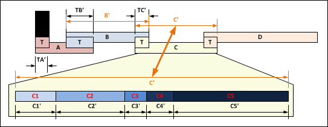
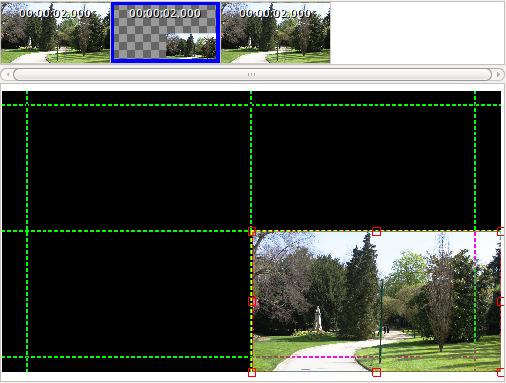

Principes de fonctionnement
Les diapositives sont
affichées les unes après les autres, dans l'ordre
dans lequel elles apparaissent dans la barre de temps.
Le schéma suivant symbolise les principes de fonctionnement des diapositives :
Le schéma suivant symbolise les principes de fonctionnement des diapositives :

Les diapositives
Sur la partie haute du schéma sont représentées les diapositives A, B, C et D.
- Chaque diapositive possède une transition entrante (symbolisée sur le schéma par un petit carré T). Les transitions n’ont pas toute la même durée (symbolisée sur le schéma par les longueurs TB’, TC’, etc…) : il est en effet possible de définir diapositive par diapositive la durée de la transition entrante (ou bien d’indiquer pas de transition : durée=0).
- Chaque diapositive possède une durée qui lui est propre (symbolisée sur le schéma par les longueurs B’, C’, etc…): Certaines peuvent ne durer que quelques secondes alors que d'autres peuvent durer plusieurs minutes. Les durées sont exprimées en seconde mais ne sont pas forcément des valeurs entières : Une diapositive peut très bien durer 12,234 secondes !
- Chaque diapositive est une composition. C’est-à-dire un assemblage de un ou plusieurs éléments multimédia qui sont animés dans le temps. L’animation dans le temps est réalisée au travers de plan.
- Chaque diapositive peut définir un nouvel arrière-plan (fond d’écran).
- Chaque diapositive peut définir une nouvelle liste de lecture de fichiers musicaux
Les
diapositives qui ne définissent pas d'arrière-plan,
utilisent l'arrière-plan défini dans une diapositive
précédente. Ainsi dans l'exemple suivant :
- Diapositive 1 - Définit un arrière-plan
- Diapositive 2 - Ne définit pas d'arrière-plan et utilise donc l'arrière-plan définit par la diapositive 1
- Diapositive 3 - Ne définit pas d'arrière-plan et utilise donc l'arrière-plan définit par la diapositive 1
- Diapositive 4 - Définit un arrière-plan
- Diapositive 5 - Ne définit pas d'arrière-plan et
utilise donc l'arrière-plan définit par la
diapositive 4
Le
même principe est appliqué aux listes de lecture des
fichiers musicaux. Tant que les diapositives ne définissent
pas de nouvelle liste de lecture, elles utilisent la
dernière liste de lecture définie.
Les plans et les blocs
La partie basse du schéma
représente la diapositive C.
- Chaque diapositive est définie avec de 1 à plusieurs plans. Les plans sont symbolisés sur le schéma par les rectangles C1, C2, C3, etc…
- Chaque plan possède sa propre durée (symbolisée sur le schéma par les longueurs C1’, C2’, C3’, etc…). Certains plans peuvent ne durer que quelques secondes alors que d'autres peuvent durer plusieurs minutes. Certains plans peuvent avoir une durée égale à 0. (Les durées sont exprimées en seconde mais ne sont pas forcément des valeurs entières : Un plan peut très bien durer 12,234 secondes !)
- Les plans peuvent contenir plusieurs objets multimédia. Les objets multimédia sont intégrés dans des blocs qui peuvent être de type titre (ne contenir que du texte), de type image (ou photo) ou de type vidéo.
- Les plans sont transparents. C'est à dire que si
l’image obtenue ne remplit pas tout l'écran,
l'arrière-plan (fond d’écran) apparaîtra.
A
noter :
- Les plans définissent l’organisation des blocs (objets multimédia) à un instant donné.
- Les animations de plans sont générées par la transformation des organisations d’un plan à un autre.
Concrètement, si dans le premier plan, une photo occupe
tout l’écran, puis n’occupe qu’une petite
partie de l’écran dans le plan suivant, alors
l’animation consistera en la transformation de la photo de
tout l’écran (plan précédent) vers la
petite partie de l’écran (plan suivant).
Exemple :

- Plan 1 : Photo occupant tout l’écran : Durée 2 secondes.
- Plan 2 : Photo n’occupant que le quart inférieur droit de l’écran : Durée 3 secondes.
- Plan 3 : Photo occupant à nouveau tout l’écran : Durée 2 secondes.
- Résultat : La photo sera affichée sur tout l’écran pendant 2 secondes puis se réduira progressivement vers le quart inférieur droit de l’écran pendant 3 secondes puis s’agrandira jusqu’à occuper à nouveau tout l’écran pendant 2 secondes.
- La diapositive prendra fin dès que la photo aura atteint la position définie dans le plan 3.
A noter :
La définition des objets de chaque bloc peut varier d’un plan à l’autre : Dans l’exemple suivant, sont représentés trois définitions différentes d’un même bloc :
- Les transformations s’effectuent progressivement : Dans l'exemple vous verrez l’image se réduire progressivement.
- Les transformations s’effectuent durant toute la
durée du plan suivant.
La définition des objets de chaque bloc peut varier d’un plan à l’autre : Dans l’exemple suivant, sont représentés trois définitions différentes d’un même bloc :
- 1er plan : L’image est entière.
- 2eme plan : L’image est recadrée sur la statue.
- 3eme plan : L’image est recadrée sur les promeneurs.
Si on
applique ces définitions à l’exemple des 3 plans
précédents :
- La photo complète sera affichée sur tout
l’écran pendant 2 secondes puis se réduira
progressivement en zoomant sur la statue vers le quart
inférieur droit de l’écran pendant 3 secondes
puis s’agrandira jusqu’à occuper à
nouveau tout l’écran en se déplaçant vers
les promeneurs pendant 2 secondes.
Remarque :
- ffDiaporama peut gérer jusqu'à plusieurs centaines de diapositives dans un seul montage.
- Chaque diapositive peut être composée de plusieurs (dizaines) de plans.
- Chaque diapositive peut contenir plusieurs (dizaines) de blocs.
- Les blocs peuvent être visibles sur certains plans et
invisibles sur d’autres plans.
La propriété "Visible" des blocs et la gestion des
pauses
Les blocs possèdent une
propriété Visible ou invisible. Dans l'exemple
suivant, l'image est insérée 3 fois (dans 3 blocs)
dans la même diapositive.
La statue et les marcheurs ont leur propriété positionné sur invisible sur le 1er plan.
Puis la statue devient visible sur le 2eme plan.
Enfin, la statue redevient invisible sur le 3eme plan et les marcheurs deviennent visibles.
Résultat :
En effet, comme évoqué précédemment, les animations de plans sont générées par la transformation des organisations d’un plan à un autre.
Ainsi, si sur le 1er plan, la statue occupait le petit coin inférieur gauche de l'écran au lieu de la même position que sur le 2eme plan, alors au lieu de simplement apparaître pendant 2 secondes sur le 2eme plan, elle apparaîtrait en s’agrandissant depuis le petit coin inférieur gauche de l'écran.
A noter que dans le cas de vidéos, celles-ci sont mises en pause quand elles sont invisibles.
Ainsi, une vidéo peut être diffusée pendant quelques secondes dans un 1er plan, puis être passée en invisible et donc en pause dans un second plan, puis repasser visible sur un 3eme plan et reprendre sa diffusion, là où elle en était restée à la fin du 1er plan.
- Le premier bloc défini l'image entière remplissant tout l'écran
- Le deuxième bloc défini l'image recadrée sur la statue et positionnée sous forme d’ellipse dans la partie droite de l'écran
- Le troisième bloc défini l'image recadrée sur les marcheurs et positionnée également sous forme d’ellipse dans la partie droite de l'écran
La statue et les marcheurs ont leur propriété positionné sur invisible sur le 1er plan.
Puis la statue devient visible sur le 2eme plan.
Enfin, la statue redevient invisible sur le 3eme plan et les marcheurs deviennent visibles.
Résultat :
- Pendant 2 secondes, le 1er plan est affiché et on ne voit que l'image entière qui occupe tout l'écran
- Les 2 secondes suivantes, la statue apparaît
- Les 2 secondes encore suivantes, la statue est remplacée par les marcheurs
En effet, comme évoqué précédemment, les animations de plans sont générées par la transformation des organisations d’un plan à un autre.
Ainsi, si sur le 1er plan, la statue occupait le petit coin inférieur gauche de l'écran au lieu de la même position que sur le 2eme plan, alors au lieu de simplement apparaître pendant 2 secondes sur le 2eme plan, elle apparaîtrait en s’agrandissant depuis le petit coin inférieur gauche de l'écran.
A noter que dans le cas de vidéos, celles-ci sont mises en pause quand elles sont invisibles.
Ainsi, une vidéo peut être diffusée pendant quelques secondes dans un 1er plan, puis être passée en invisible et donc en pause dans un second plan, puis repasser visible sur un 3eme plan et reprendre sa diffusion, là où elle en était restée à la fin du 1er plan.
Note :
La durée totale du montage n'est pas égale à la somme des durées des diapositives car les transitions font que les diapositives se chevauchent : Deux diapositives de 10 secondes possédant chacune une transition de 1 seconde donnera une durée totale pour le montage de 19 secondes (et non pas de 20 secondes) !Voir aussi
ffDiaporama 1.0